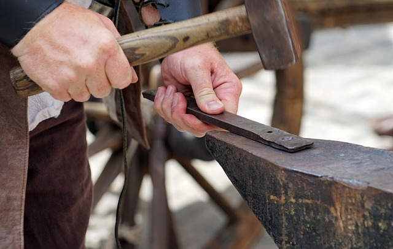
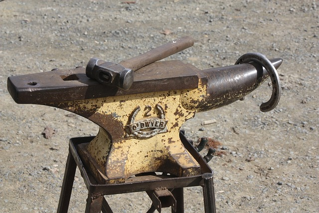

Nuestros servicios de herrería cerca de Misiones
Descubre los servicios que ofrecemos para satisfacer tus necesidades
Estructuras metalicas
Diseño y construcción de estructuras metálicas a medida para proyectos residenciales, comerciales e industriales
Puertas y Portones
Fabricación de puertas y portones de metal personalizados, combinando seguridad y elegancia en cada diseño
Rejas y Barandas
Instalación de rejas y barandas en Misiones de metal para mejorar la seguridad y embellecer tu propiedad con un toque estético.
Muebles de Herrería
Creación de muebles únicos y duraderos, desde mesas y sillas hasta piezas de arte funcional en metal.
Restauración de elementos metálicos
Recuperación y restauración de elementos metálicos antiguos, preservando su autenticidad y encanto original.
Esculturas de Metal
Diseño y fabricación de esculturas personalizadas en metal para enriquecer espacios interiores y exteriores.
Soldadura y Reparación
Servicios de soldadura experta para reparar y reforzar estructuras metálicas, garantizando durabilidad y seguridad.
Asesoramiento y presupuesto
Colaboramos contigo en el diseño y presupuestos de proyectos personalizados, ofreciendo asesoramiento para lograr funcionalidad y estética perfectas
Contacto
VISITE O LLAME PARA PROGRAMAR UNA CONSULTA Y DESCUBRIR CÓMO PODEMOS AYUDARLE.
📞 ¡HAZ CLICK PARA LLAMAR! AL +541111111111!
Fin del Espacio Publicitario
Elija una localidad
1º de Mayo
1 DE MAYO25 de Mayo
9 de Julio Kilómetro 20
9 de Julio Kilómetro 28
9 DE JULIOAlba Posse
Alicia Alta
COLONIA ALICIAAlicia Baja
Almafuerte
Apóstoles
Aristóbulo del Valle
Arroyo del Medio
Azara
Bario Ita
Barra Concepción
Barrio Cuatro Bocas
Barrio del Lago
Barrio Escuela 461
Barrio Escuela 633
Barrio Guatambu
Barrio Nuevo Garupa
Barrio Rural
Barrio Tungoil
Bernardo de Irigoyen
Bonpland
Caá - Yarí
Caburei
Campo Grande
Campo Ramón
Campo Viera
Candelaria
Capioví
Capioviciño
Caraguatay
Cerro Azul
Cerro Corá
Colonia Alberdi
ALBERDIColonia Aurora
Colonia Polana
Colonia Victoria
Colonia Wanda
WANDAComandante Andresito
ALMIRANTE BROWNConcepción de la Sierra
Corpus
Cruce Caballero
Domingo Savio
Dos Arroyos
Dos de Mayo
DOS DE MAYO NUCLEO INUCLEO I
NUCLEO II